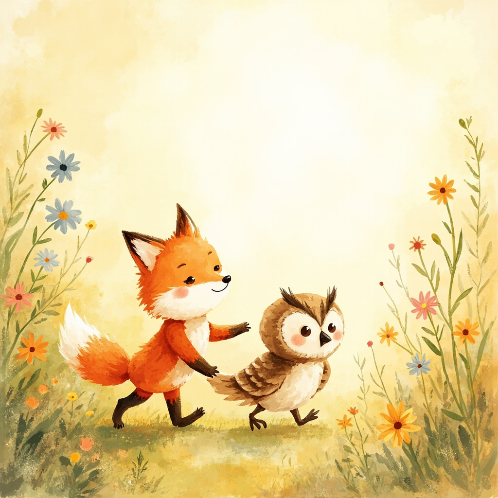
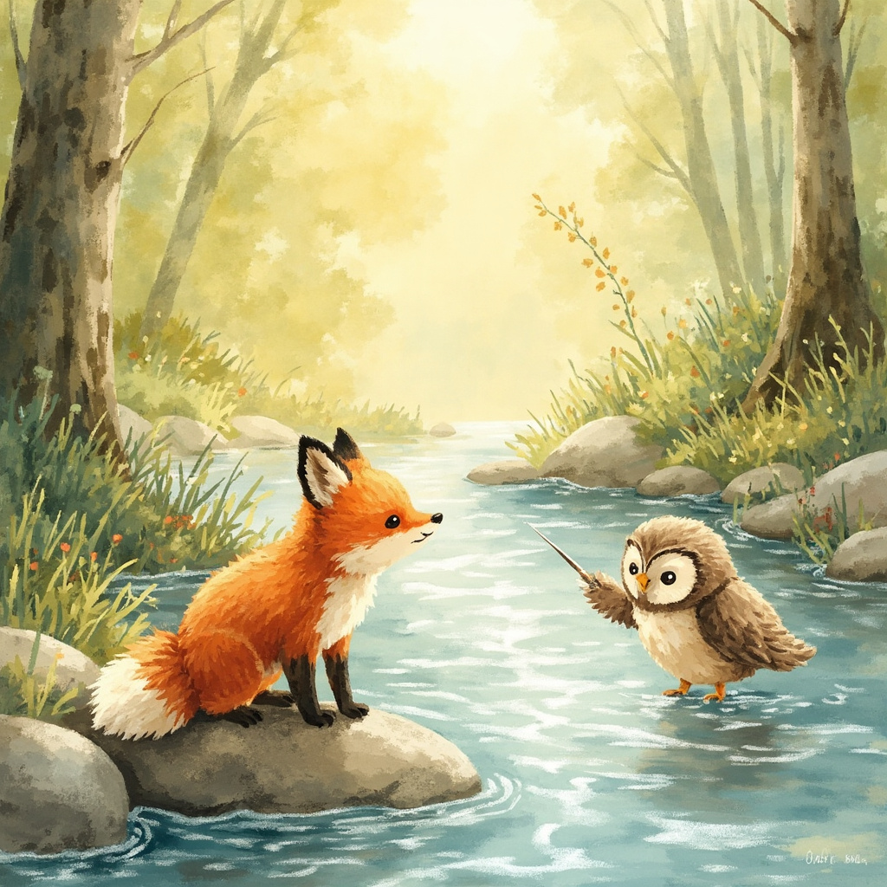
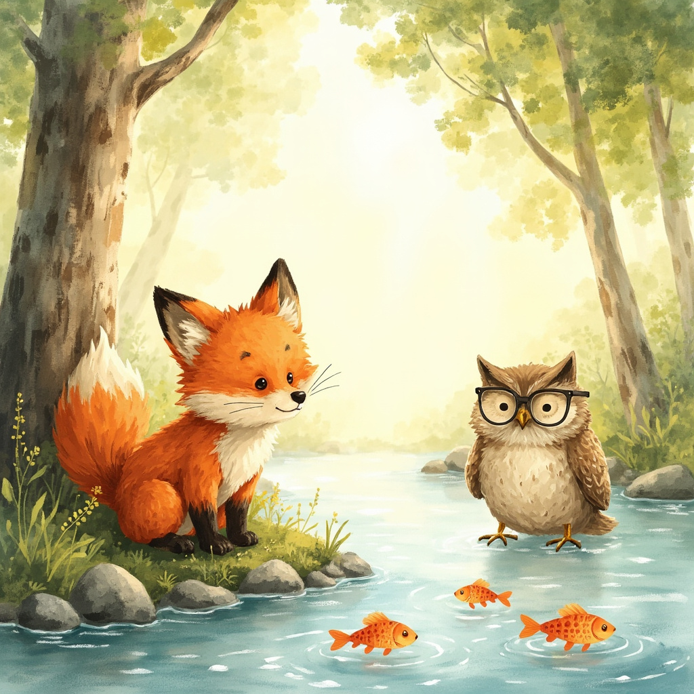
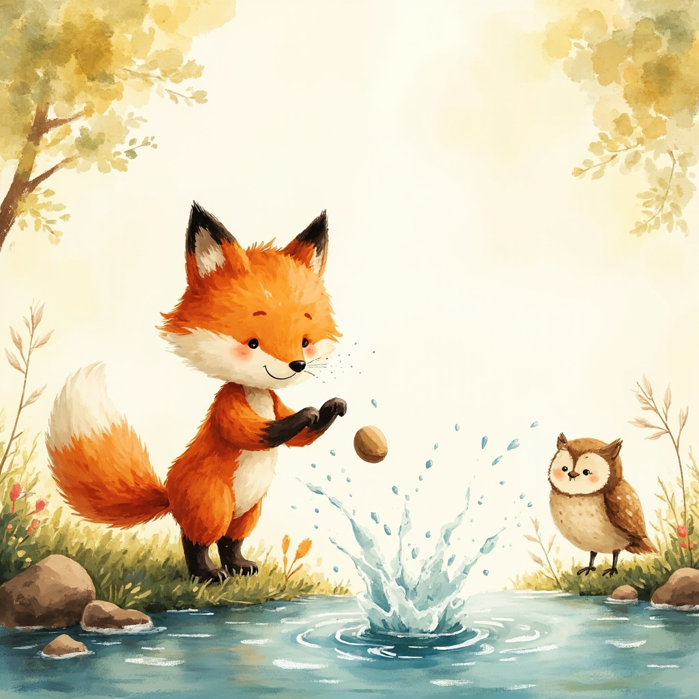
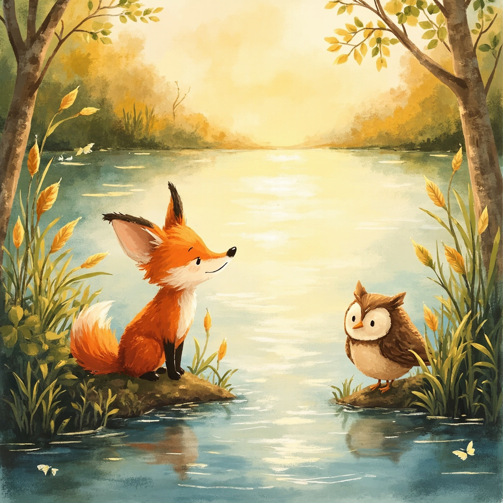

En dag hörde Fifi något konstigt. 'Vad är det för ljud?' frågade hon. 'Det låter som sång,' sa Oliver.

Fifi och Oliver följde ljudet genom ängen. Ju närmare de kom, desto starkare blev det. 'Det är vatten!' ropade Fifi.

De hittade en liten bäck som glittrade i solen. 'Det här är fantastiskt!' sa Fifi med stora ögon. Oliver log.

Fifi såg små fiskar simma i vattnet. 'Vad är det där?' frågade hon. 'Det är fiskar,' förklarade Oliver tålmodigt.

Sedan försökte Fifi kasta stenar i vattnet. PLASK! 'Titta, jag fick den att plaska!' Oliver skrattade och berömde hennes teknik.

De följde bäcken hela vägen till sjön. 'Naturen är full av under!' sa Fifi glad. 'Vi upptäcker mer imorgon,' sa Oliver.